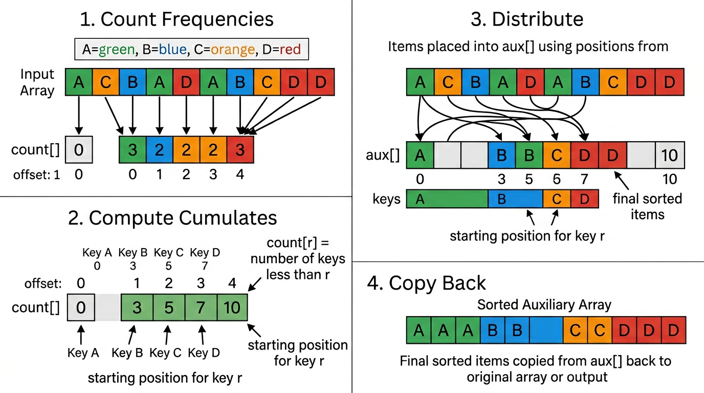
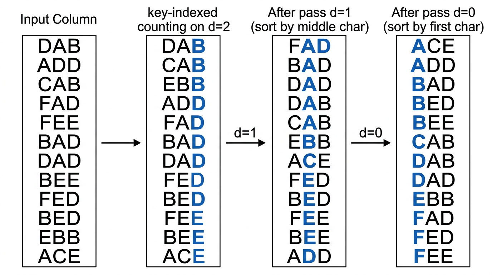

String Sorting — COMP0005 Algorithms¶
Lecture-style notes. Comparison-based sorting has a lower bound of \(\sim N \lg N\). When keys are strings drawn from an alphabet of size \(R\), we can exploit the character-by-character structure to sort in linear or near-linear time using radix sorts. The building block is key-indexed counting.
1. COMPLETE TOPIC SUMMARIES¶
Strings and alphabets¶
A string is a sequence of characters from a fixed alphabet of size \(R\) (the radix).
| Alphabet | R | lg R | Characters |
|---|---|---|---|
| Binary | 2 | 1 | 0 1 |
| DNA | 4 | 2 | A C T G |
| Hexadecimal | 16 | 4 | 0–9 A–F |
| ASCII | 128 | 7 | Standard ASCII |
| Extended ASCII | 256 | 8 | Extended ASCII |
| Unicode 16 | 65 536 | 16 | Unicode BMP |
Standard operations: length, indexing (the \(i\)th character), substring extraction, concatenation.
Key-indexed counting¶
Assumption. Keys are integers in \([0, R-1]\). Because \(R\) is small, we can use the key itself as an array index.
Algorithm (4 steps):
- Count frequencies. For each item, increment
count[key + 1]. The+1offset simplifies the next step. - Compute cumulates. For each
r, setcount[r+1] += count[r]. After this,count[r]equals the number of keys strictly less thanr— i.e. the first output position available for keyr. - Distribute. Scan the input left-to-right. Place each item at
aux[count[key]], then incrementcount[key]. This preserves input order among equal keys (stability). - Copy back. Copy
aux[]into the original array.
Pseudocode:
def key_indexed_sort(a, R):
N = len(a)
count = [0] * (R + 1)
aux = [None] * N
for i in range(N): # Step 1: frequencies
count[a[i].key + 1] += 1
for r in range(R): # Step 2: cumulates
count[r + 1] += count[r]
for i in range(N): # Step 3: distribute
aux[count[a[i].key]] = a[i]
count[a[i].key] += 1
for i in range(N): # Step 4: copy back
a[i] = aux[i]
Analysis:
| Property | Value |
|---|---|
| Time | \(\sim N + R\) |
| Space | \(\sim N + R\) |
| In-place? | No |
| Stable? | Yes |
Stability is critical: it allows radix sorts to build on key-indexed counting pass by pass.

{kind=link}
LSD radix sort (least-significant-digit first)¶
Assumption. All strings have the same fixed length \(W\).
Idea. Sort by each character position, starting from the rightmost (position \(W-1\)) and moving left to position 0. Each pass uses key-indexed counting on one character position.
Why it works (correctness by stability):
- After pass \(d\), all strings are sorted by their last \(W - d\) characters.
- At pass \(d-1\), key-indexed counting sorts stably on position \(d-1\). Strings that differ at position \(d-1\) are separated correctly. Strings that agree at position \(d-1\) retain their relative order from the previous pass (stability), so they remain sorted by the trailing characters.

{kind=link}
Pseudocode:
def lsd_sort(a, W):
N = len(a)
R = 256 # radix (e.g. extended ASCII)
aux = [None] * N
for d in range(W - 1, -1, -1): # right to left
count = [0] * (R + 1)
for i in range(N):
count[ord(a[i][d]) + 1] += 1
for r in range(R):
count[r + 1] += count[r]
for i in range(N):
aux[count[ord(a[i][d])]] = a[i]
count[ord(a[i][d])] += 1
for i in range(N):
a[i] = aux[i]
Analysis:
| Property | Value |
|---|---|
| Time | \(\sim W \cdot (N + R)\), effectively \(O(WN)\) for fixed \(R\) |
| Space | \(\sim N + R\) |
For fixed-length keys where \(W\) is a small constant (e.g. licence plates, phone numbers), LSD is linear in \(N\).
MSD radix sort (most-significant-digit first)¶
Idea. Partition strings by their first character using key-indexed counting, then recursively sort each partition on the next character. Subproblems shrink because each partition shares a common prefix.
End-of-string handling. Strings may have variable lengths. When a string is shorter than the current depth \(d\), treat its character as -1 (a sentinel that sorts before any real character). In the count array this is handled by using offset +2 instead of +1.
Pseudocode:
def msd_sort(a, aux, lo, hi, d):
if hi <= lo:
return
R = 256
count = [0] * (R + 2)
for i in range(lo, hi + 1):
count[char_at(a[i], d) + 2] += 1
for r in range(R + 1):
count[r + 1] += count[r]
for i in range(lo, hi + 1):
aux[count[char_at(a[i], d) + 1]] = a[i]
count[char_at(a[i], d) + 1] += 1
for i in range(lo, hi + 1):
a[i] = aux[i - lo]
for r in range(R):
msd_sort(a, aux, lo + count[r], lo + count[r + 1] - 1, d + 1)
# Initial call: msd_sort(a, [None]*len(a), 0, len(a)-1, 0)
where char_at(s, d) returns ord(s[d]) if d < len(s), else -1.
Analysis:
| Property | Value |
|---|---|
| Time (worst) | \(\sim W \cdot N\) (all strings identical up to length \(W\)) |
| Time (average, random) | \(\sim N \log_R N\) |
| Space | \(\sim N + D \cdot R\) where \(D\) is recursion depth (longest common prefix) |
MSD vs LSD:
| LSD | MSD | |
|---|---|---|
| String length | Fixed \(W\) | Variable |
| Order of passes | Right → left | Left → right (recursive) |
| Small subarrays | N/A | Can be expensive (each creates a count[] of size \(R\)) |
| Average time | \(\sim WN\) | \(\sim N \log_R N\) (sublinear in string length) |
Practical optimisation. Switch to insertion sort for small subarrays to avoid the \(R\)-sized count[] overhead on tiny partitions.
Comparison with comparison-based sorts¶
| Algorithm | Guarantee | Stable | Notes |
|---|---|---|---|
| Comparison sorts | \(\sim N \lg N\) lower bound | varies | General keys |
| Key-indexed counting | \(\sim N + R\) | Yes | Integer keys in \([0, R)\) |
| LSD radix sort | \(\sim WN\) | Yes | Fixed-length strings |
| MSD radix sort | \(\sim N \log_R N\) avg | Yes | Variable-length strings |
Radix sorts bypass the \(N \lg N\) comparison lower bound because they examine individual characters, not whole-key comparisons.
2. EXAM-STYLE QUESTIONS (WITH MODEL ANSWERS)¶
Q1 — Key-indexed counting trace¶
Question. Given the array [C, A, B, A, D, C, B, A] with alphabet {A=0, B=1, C=2, D=3}, trace the four steps of key-indexed counting.
Model answer.
Step 1 (frequencies, offset by 1): count = [0, 3, 2, 2, 1].
Step 2 (cumulates): count = [0, 3, 5, 7, 8].
Step 3 (distribute): scan left-to-right, place each item at aux[count[key]], increment. Result: aux = [A, A, A, B, B, C, C, D].
Step 4 (copy back): a = [A, A, A, B, B, C, C, D].
Q2 — LSD correctness¶
Question. Explain why LSD radix sort is correct, given that it processes characters from right to left.
Model answer. After pass \(d\), all strings are correctly sorted by their last \(W - d\) characters. At the next pass (\(d-1\)), key-indexed counting sorts stably on character \(d-1\). Strings differing at position \(d-1\) are placed in the correct order. Strings agreeing at position \(d-1\) retain their relative order from the previous pass because key-indexed counting is stable. By induction, after all \(W\) passes the strings are sorted by all characters.
Q3 — MSD vs LSD¶
Question. When would you prefer MSD over LSD radix sort?
Model answer. MSD is preferred when strings have variable lengths (LSD requires fixed length) or when strings have long common prefixes that diverge early (MSD can stop recursing once groups are singleton). On average MSD examines \(\sim N \log_R N\) characters, which can be much less than the \(WN\) characters LSD always examines when \(W\) is large.
Q4 — Why stability matters¶
Question. What goes wrong if the per-character sort in LSD radix sort is not stable?
Model answer. If the sort at pass \(d\) is unstable, equal-key items can be reordered arbitrarily. Items that were previously sorted by their later characters (positions \(d+1, \ldots, W-1\)) would lose that ordering. The final result would not be sorted, because the order established by earlier (rightward) passes would be destroyed.
Q5 — MSD space usage¶
Question. Explain why MSD radix sort uses \(\sim N + D \cdot R\) space, where \(D\) is the recursion depth.
Model answer. The auxiliary array aux[] of size \(N\) is shared across all calls. However, each recursive call allocates a count[] array of size \(R + 2\). In the worst case, the recursion depth is \(D\) (the length of the longest common prefix among all strings), so up to \(D\) count[] arrays coexist on the call stack, giving \(D \cdot R\) additional space.